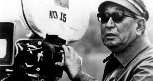
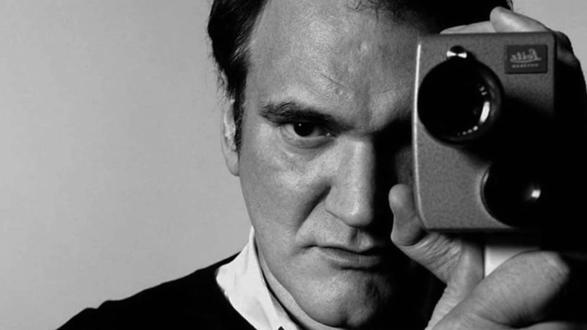
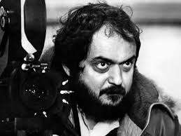

Sal's journey started as a seed planted when he was 10 years old.
Akira Kirosawa
I asked Sal about who his film influences are and as expected Akira Kurosawa came up. Sal took apragmatic approach and explained that Kurosawa transcended the genre. Akira took a perspective that Sal feels he can't achieve but will strive for. Kurosawa's films are cultural and temporal at their best and you know your looking at the best that was produced at that time. "The Seventh Samurai"is problaby the best example of that.
Quentin Tarantino
Tarantino is just fun film making and you can feel it. With his use of language or colorful metaphors and ultra violence Tarantino builds the anticipation of a scene smoothly and flows naturally. I asked if "Pulp Fiction" was his favorite and Sal responded with "once Upon a Time in Hollywood"as his favorite film. Sal cited the personal references with the music allowing a modern LA flavor that put you there.
Stanley Kubrik
Sal seemed paricularly inclined to Stanley Kubrik. He felt that Kubrik transcends the genre. Each movie is different and reflected the stories that Kubrik liked. Kubrik has a way of skirting around a scene using a visual style and dialogue to reflect his personal journey through the mdeium. Sal cited the fact that Kubrik used tech and period accuracy to an advantage that allows the viewer to look through Kubrik's eyes. The best example in Sal's eyes is "Barry Lyndon".